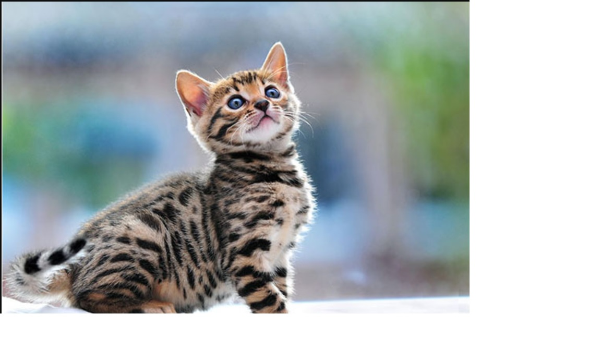
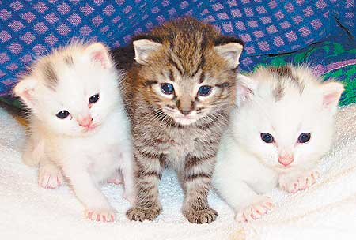
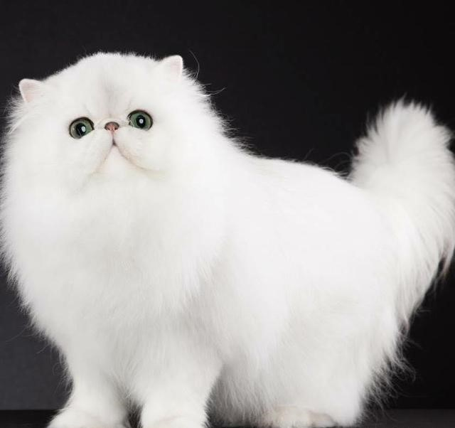

Ashera 阿什拉

Ashela is a hybrid cat with a blood line between the African serval, Asian leopard cat and ordinary domestic cat. It is known for its wisdom, affection and loyalty. It is the most expensive cat in the world.
Price：about NT 660,000~3,700,000
The Savannah cat is the largest of the cat breeds. A Savannah cat is a cross between a domestic cat and a serval, a medium-sized, large-eared wild African cat. The unusual cross became popular among breeders at the end of the 1990s, and in 2001 The International Cat Association (TICA) accepted it as a new registered breed. In May 2012, TICA accepted it as a championship breed. On April 7, 1986, Judee Frank crossbred a male serval, belonging to Suzi Woods, with a Siamese domestic cat to produce the first Savannah cat (named Savannah). In 1996, Patrick Kelley and Joyce Sroufe wrote the original version of the Savannah breed standard and presented it to the TICA board, and in 2001, the board accepted the breed for registration. The Savannah cat can come in different colors and patterns; However, TICA breed standards accept only spotted patterns with certain colors and color combinations.
Price：About NT$ 300,000 to 750,000
The Bengal cat is a domesticated cat breed created from hybrids of domestic cats, especially the spotted Egyptian Mau,
with the Asian leopard cat (Prionailurus bengalensis). The breed name comes from the leopard cat's taxonomic name.
Bengals have a wild appearance; their golden shimmer comes from their leopard cat ancestry, and their coats may show spots, rosettes, arrowhead markings, or marbling.
They are an energetic breed which needs much exercise and play. Price：About NT$ 120,000 to 300,000
Allerca is headquartered in San Diego, California. A few months ago,
it announced the breeding of anti-allergic cat "AL721" (also known as Josh, Josh) that can prevent the owner from allergic reactions.
The kittens were sterilized between 10 and 12 weeks after birth.
The company's statement is to prevent cat mouth expansion, in fact, it is also based on the consideration of business opportunities, after all,
there are not many other companies that master this technology.
Josh is one of the first anti-allergy cats in the world. There are no protein allergens in their saliva and fur.
Cats can cause human allergies because of the enzymes in their skin and the ingredients in their saliva.
People with allergies will have snot and tears when they touch it.
Allerca researchers examined several cats and found that some cats have genetic mutations that produce special enzymes that are less likely to
cause allergic reactions in the human body.
Allerca bred cats with genetic mutations in the laboratory, and let these kittens test them in the houses of people who are allergic to cats
, proving that these cats do not cause allergies. Price：3,950 US dollars (about NT$ 180,000)
The Persian cat (Persian: گربهٔ ایرانی, romanized: Gorbe-ye irāni ‚Iranian cat) is a long-haired breed of cat characterized by its round face and short muzzle.
It is also known as the "Persian Longhair" in the English -speaking countries. The first documented ancestors of the Persian were imported into Italy from Iran
(historically known as Persia in the west) around 1620.Recognized by the cat fancy since the late 19th century, it was developed first by the English,
and then mainly by American breeders after the Second World War. Some cat fancier organizations'
breed standards subsume the Himalayan and Exotic Shorthair as variants of this breed, while others treat them as separate breeds.
The selective breeding carried out by breeders has allowed the development of a wide variety of coat colors,
but has also led to the creation of increasingly flat-faced Persians. Favored by fanciers,
this head structure can bring with it a number of health problems. As is the case with the Siamese breed,
there have been efforts by some breeders to preserve the older type
of cat, the traditional breed, having a more pronounced muzzle, which is more popular with the general public.
Hereditary polycystic kidney disease is prevalent in the breed,
affecting almost half the population in some countries. Price：About NT$ 54,000~165,000
Bengal cat 孟加拉貓

Allerca hypoallergenic cat 防敏感貓

Persian cat 波斯貓
